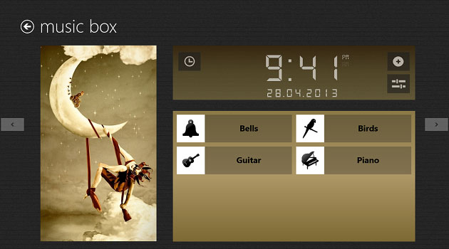

Yesterday Sleep Bug was released on Windows 8. It contains 24 scenes (12 free) and supports background audio. This means that you can listen to the scenes while using your favourite Windows 8 app. Try it out today: Download Sleep Bug for Windows 8
PS: Microsoft does not support transferring purchases from Windows Phone to Windows 8!
